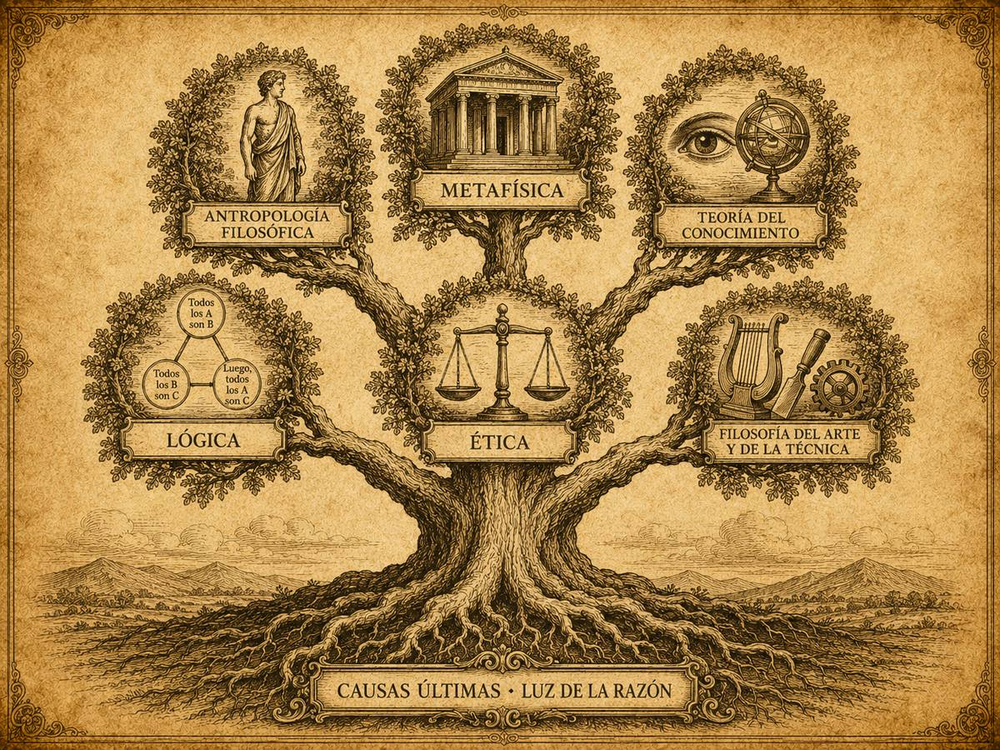

Subpuntos 1.1.1 y 1.1.2 · Aproximación a la Filosofía del Derecho
El origen del pensamiento y su estructura
Antes de que exista una norma que aprender, existe una pregunta que nadie se había hecho. Este primer apartado recorre de dónde nace el filosofar, qué distingue una pregunta filosófica de una técnica y cómo se ordena el mapa de disciplinas donde el derecho encontrará su lugar.
Prof. Carlos Eduardo Chica-Villacís Docente autor · Universidad Católica de Cuenca
Para quien se adentra por primera vez en el ámbito del derecho, el punto de partida no está en memorizar leyes, sino en una disposición del espíritu que los clásicos llamaron admiración —thaumazein—. Castillo Córdova sostiene que filosofar no es una actividad reservada a inteligencias arcanas, sino un conocimiento naturalmente humano, accesible a cualquiera.
Para que esa capacidad se active hace falta una condición previa: la deshabituación. Consiste en salir de lo acostumbrado, en romper la inercia de la vida diaria donde aceptamos las cosas como obvias. En medio del activismo y de la primacía de los resultados prácticos la admiración resulta imposible, porque la mente permanece pasiva ante los estímulos externos. Para admirarse hay que pararse a pensar.
Castillo Córdova, exponiendo la filosofía de Leonardo Polo, explica que la existencia ordinaria fluye en el tiempo, en lo que Polo denomina «el reino del gasto»: lo fugaz y lo contingente. La admiración permite al ser humano detenerse y vislumbrar lo intemporal, aquello permanente que escapa a lo efímero. Es una actitud de serena insatisfacción que despierta la capacidad de preguntar.
Conocimiento instrumental centrado en el «cómo» de una actividad, que desconoce el «qué es» de esa misma actividad. Castillo Córdova, exponiendo los Diálogos de Platón, relata cómo Sócrates entrevistaba a los artesanos de Atenas: ejecutaban su oficio con destreza, pero no sabían responder qué eran las cosas que hacían. Un oficial judicial sabe redactar una notificación de embargo conforme al formato procesal, aunque no comprenda qué es la coacción en sentido ontológico.
Conocimiento cierto por causas, limitado a una parte de la realidad y a las causas próximas. La ciencia del derecho civil analiza la validez de un arrendamiento atendiendo a la capacidad de las partes o a la licitud del objeto según el código vigente.
Aspira al conocimiento de la totalidad de lo real por sus causas últimas, mediante la luz natural de la razón. Castillo Córdova, exponiendo a Polo, ilustra la diferencia: un matemático domina las propiedades de los números; el filósofo pregunta qué es el número en cuanto tal. En derecho ocurre lo mismo. La ciencia jurídica describe el contenido de una ley fiscal; la filosofía del derecho cuestiona la justificación última del poder del Estado para exigir tributos.
Apartado elaborado a partir de Castillo Córdova (2013).Estudia los principios del universo y la explicación última del ser de los entes, más allá de lo material y lo sensible. En derecho: el estatuto ontológico de una persona moral —una sociedad anónima—, que carece de existencia física observable.
Estudia al ser humano de manera radical, su esencia y sus facultades. En derecho: el fundamento del libre albedrío, presupuesto para imputar responsabilidad civil o penal.
Estudia los actos de la razón, el alcance del conocimiento humano y su relación con la verdad. En derecho: si la «verdad histórica» que un juez declara probada por indicios es conocimiento real de los hechos o construcción formal de la mente.
Estudia las condiciones para que los razonamientos sean formalmente correctos. En derecho: si una sentencia respeta el silogismo deductivo o incurre en falacias al aplicar la norma al hecho.
Ciencia práctica que ordena la conducta humana libre según su fin último. En derecho: si el abogado que destruye pruebas legalmente obtenidas para salvar a su cliente obra de forma reprobable.
Estudia el sentido y la finalidad de las creaciones humanas. En derecho: si emplear sistemas automatizados para dictar sentencias vulnera la dignidad al sustituir la prudencia del juez por un algoritmo.

Se ubica entre las filosofías segundas, ramas de la filosofía práctica. Su misión es investigar críticamente los fundamentos del estatuto jurídico, los conceptos universales de la ciencia del derecho y su relación con la justicia, la ética y la realización de la persona en sociedad.
Apartado elaborado a partir de Castillo Córdova (2013) y Garzón Valdés (2008).Si el derecho es una herramienta de orden social que aspira a la justicia, ¿la obligatoriedad de una ley depende solo de que la autoridad estatal la haya promulgado formalmente —un hecho técnico—, o necesita fundarse en exigencias morales y de dignidad humana para ser verdaderamente derecho?
Desde el aula
«Cada año, al llegar a este punto, alguien pregunta lo mismo: si voy a ser abogado, ¿para qué me sirve la filosofía? Es la mejor pregunta del bloque y conviene tomársela en serio, porque tiene respuesta.
Vuelvan al pasaje de Sócrates y los artesanos. El artesano sabía ejecutar su oficio con destreza; no sabía decir qué era lo que hacía. Sabía el cómo y no el qué es. Ese artesano no es una figura antigua: es el abogado que redacta impecablemente una demanda y no sabría defender por qué el juez debe atenderla si el otro lado invoca un principio contrario. Sirve mientras el caso sea rutinario. Deja de servir exactamente cuando el caso se pone difícil, que es cuando a uno lo contratan.
Así que la respuesta no es que todo abogado deba ser filósofo. Es más modesta y más exigente: el que solo domina el cómo tiene techo, y ese techo aparece el día que hay que justificar y no basta con explicar.»